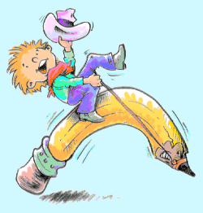

|
* with teacher's comments |
 |
Different Language, Different Life
As a foreigner from China, I have been the United States for over one year. At the beginning, I felt some sad for leaving homeland far. I missed my family and friends. I also missed Chinese food and books. I had nothing to do but missing how I used to do. I looked and thought everything to compare with Chinese.
I can't accept some American foods. They are so different from Chinese. I also can't understand how can American people consume so much while the rest of world has lack of resource and famine. Saving money in Chinese way could be considered as wasting time in America. And money saving doesn't mean having credit - debtor looks more reliable.
The different knowledge gave me whole new concepts of a different life. Sometimes I hated to change the rules in my life. And I was afraid of difficult communication with banks, telephone companies and clerks. I can't talk as freely as I did before.
I am an optimistic person and always look the bright side of the world. Gradually I tried to learn much from this new land and be happy of doing with new experience. I like to try the new stuff and new way. I decide to return to the school and continue my education. Now, my first important thing is learning English. Because my life is changing, so is my major language.
However, there are some difference between Chinese and English.
First, there are only twenty-six letters in English. Every word is composed from these letters. And Chinese characters are from ancient pictograph word. Sometimes you can figure out the meanings and the pronunciations of the words before you know them. For this way, Chinese is easier than English. Although there become a lot of characters in Chinese. We say there at least 3,000 words for daily language.
Second, Chinese mandarin pronunciation use only four tones. A Chinese character may have two or more different pronunciations and meanings. And a same pronunciation may represent lots of words. In English, word usually has one pronunciation. However, sometimes I was confused to use different accent for different meaning.
The last one, we don't have verb tenses in Chinese. We just add adverb prior to the verb and don't need change the verb's form. In English, We have many kinds of tense, and we have to use correct verb form in the tense. It's some hard to me. For example, I said," I drive my car to school yesterday". Then I knew I made mistake and continued, "oh, it's 'drove', I drove my car..."
So I am learning to be a good student. I am going to study more in the school. I am also going to study more from the life. I am going to live as an American. I am going to merge into the culture... I have a different language. I have a different life, too. Am I going to be a different person some day? I'm not sure yet. But I will never worry about it.
Memories Of Writing
I started learning how to write when I was growing up in China. There are a lot of good and bad experiences for me. Some of them have had an effect on my life.
I was an obedient and well-behaved kid when I was in school. I studied hard and always submitted homework on time. I tried to absorb everything the teachers taught.
I liked Chinese very much. When I was 10 years old, I learned to write journal every day. That was a wonderful time. I just wrote what I thought in real and some naive words. Maybe I used wrong syntax, wrong phrases, but it was good enough for me. My teacher checked my journals carefully. She gave me some suggestions. She told me I had to have a clue (main idea) first when I began to write a paragraph, an article, or a journal. Then I had to describe this clue by some examples. In the end of article I had to write a closing. She also taught me how to write different style articles. She said, "if you want to make your articles interesting, you have to grip reader's heart." That is, I had to write interesting and important things in my article and delete nonsense words.
When I went to high school, something changed. At that time, our writing teacher wanted us to write articles around two sides, good and bad. We followed a template when we wrote an article. We liked to copy sentences from newspaper or some good articles. There are a lot of stereotyped sentences we can use. Like this, "We got a big improvement after we studied Chairman Mao's quotations." Why did we use this? Because we had to change our minds from A to B by others instead of ourselves.
At that time, our teachers also asked us to do good things for other people at 3 times a week. We had to write journals after we did. We were students. Our tasks were studying. We had no time to count how many good things we did a week. So I just wrote something that I imagined. That's a bad memory.
After many years, I understood what our teachers asked us to do. That was a different age in China. Everybody had to do what the government taught. I wish it would not happen again.
Crazy Reading Girl
I am a crazy reading girl all the while.
I started to learn Chinese when I was 6 years old. My understanding is very good. I think I was a clever kid. And my schoolbooks were not enough to fill my needs. I borrowed a lot of storybooks from my classmates, libraries, and bookstores.
At first, I couldn't know every word in the book. I asked my parents, or looked up the dictionary. I learned most of words from books. I enjoyed reading.
In China, we have what is called "Four Greatest Literatures". There are all classical novels. I think over 50% of families have these books in China. My parents have them. I read them one time, but I didn't understand these kinds of books well. There are lots of obscurity and ancient words in the books. I learned parts of them in school. That helps me much more.
My family lived in a beautiful county. There are mountains and rivers around the living area. I liked to go to the back of my house. There was a secret space for me. Actually, there was a very old tomb. The tombstone was broken and laid on the ground. I liked to sit on the tombstone and read books in the sunny day. While I was reading, I was touched by the smell of sunshine, flowers, and the fresh air. Many years later, I thought about this, why I didn't feel scared when I sat on the tombstone? I must be a crazy girl.
Another good place for my reading is in the bed. I like to read in my bed when the weather is not good. I can lie and relax in the warm bed. I forgot time in reading. I often concentrated on the story too much to remember turning on the light when it became dark. And my eyesight keeps good is another miracle.
I read a lot of different books. I like fair story, classical novel, detective novel, and biography. My reading speed is very fast. Once I get a book, I will not stop until I finish it. Fortunately, even a quite thick book, I can finish it within a day. And I would read one book again and again if I really love it, or sometimes I have no new books to read.
Now, I still love reading. I have many books from China. I read books even on the dinner table. And I have to read something before I sleep. This is one of my unchangeable habits.
Reading As A Job
My husband started his new job two months later after we moved to US. He brought back a lot of documents about company policies and benefits. He said, "I have no time to read all of these. How about you read some?" So I did it. My job was reading the "dental insurance" part. I had to know what kind insurance program we had, and some details about our benefits.
I had lack of knowledge of dental insurance not only in English, but also in Chinese. I had no idea about what is "cleaning class I, II", nerve or crown. I never went to see a dentist in China. I have very strong teeth. I am always proud of them.
At first, I tried to translate the document by a dictionary. However, I couldn't understand the terms in the document. Only thing I could do was to translate them to Chinese. Sometimes I met a compound word. I knew the meaning of each word respectively. But when they are together, I couldn't figure them out. Like "Teeth-bridge", I knew "teeth" and "bridge". But, what is "Teeth-bridge"? What is it for? What does it look like? ... Ok, I just wrote it down. I didn't think about it. I made many these kinds of notes while I translated.
After I finished the translation, I couldn't read it. It was an obscure stuff. I tried to use another way to check my work. I found some dental brochures in the clinic. I contrasted my translation with the brochures. Then I understood some concepts.
One more thing I could do was asking my dentist. I took my notes to the clinic and made clear every term in the document. I can't describe my feeling when I saw a true "Teeth-bridge" in the clinic. It was so great to see something that you had imaged many times in your minds before.
That's a good experience. I think it is the most difficult reading assignment I have done. Before I get a harder one, I think I would not be afraid of reading something.
Writing Life Around
I really like to write. It is an important thing in my life. I write mails and messages to my family, friends and my husband almost every day.
Every morning I have to get up very early for my first class. I prepare breakfast for my husband. After I finish, I leave a note on the mirror that in the bathroom. I write:"...milk in the microwave oven, please heat it for one and half minutes; I have sprayed butter on the bread. Don't forget take your lunch..."
That's an easy writing in a day. I just write a list for my husband and I. We used to contact each other by this way.
Another writing for me is e-mail. I have some friends who live in China and US. We like to send mails to share our feelings and discuss some questions. The funny thing is, if I send mail to my Chinese friends, I don't care my grammar, punctuation, capitalization and articles. In my mind, I think they don't care, either.
But when I write to my American friends, I always check mails again and again. I send it out until I think it ok. I don't want they find a lot of mistakes in my mail though they won't laugh to me. So, you see, I am a vanity girl.
It is a good way for me to write something with my friends. They give me some suggestion. I can practice by different topics.
In China we say, "Article is like the writer". That is, we can know somebody a little bit from his/her writing. Since this point, we see that writing is useful and very important in our life.
Keep Reading, Keep Fun
Today is a multi-media age. We have TV programs, movies, radio and Internet. We can get what we want from a lot of sources. But in my point, reading is still the most important way to acquire knowledge. Whatever other media than books, they all belong to this electronic century. Only book is itself.
In ancient time, people were not able to travel far. When book was invented and introduced to this world, it might make a lot of funs to the desirous people. Our ancestor left huge of books to us so that we can know what they did and what they thought. I read many ancient Chinese poems since a little girl. I can imagine how they lived, sang and praised. One of poems described the unfair world: "Luxurious house left bad meats, while dead bones on cold street." It gave me a clear picture.
Reading is a personal habit. I can read by myself or join to somebody if I like. I can read in the bed, on the grass, or any place if I want. And I can read at any time when I have. I don't have to be bored on TV advertisement between programs. I also do not have to make schedule and go out to somewhere. When the whether is cold, reading in the bed makes me warm and comfortable. If the sunlight is good, I even don't have to worry about if there has electric power. Reading a new book, I can enjoy the smell of paper and the printing of words.
We started reading in childhood. Most of books we have read or we will read are not substitutable. We read the world we have never been. We read how we can read and what have to read. We also read how other people read. We have fun to read and read for fun.
Although we have different kinds of way to get information, we can't leave reading so far. But who knows about the portable electronic books in the future? At that time, I bet there must have someone will miss the feeling to browse and turn over the page by fingers.
After Blue Light Flashing
"After Blue Light Flashing" is the name of a famous documentary movie. It shows the true history of a big earthquake happened in Tangshan, China, 1976. That year, fortunately, I was in another city about 200 miles close to the earthquake center. I was 7 years old, while my sister was 5 and my little brother was only 6 months.
I will always remember that horrible night. My mother felt the earth shake first. She told my father that she thought an earthquake was happening, but my father didn't feel it. A bit later, my father suddenly recognized the shaking. He carried my little brother out of the house in a hurry. Meanwhile, my mother woke up my sister and me. After we ran out, the first shake was over. We were lucky and didn't lose anything.
But it was not lucky for the people in Tangshan. The next morning, we knew that the city was destroyed. It almost disappeared after several very strong shakes in hours. Over two hundred thousand people died in this city and countless people were injured and lost their houses, property, and families.
Years later, there was a film made to tell about this earthquake. It was horrible and sad that everyone recalled the night when blue lights flashed. We reviewed how the earthquake happened, and what the people was doing in the city when it happened. In this great disaster, husbands lost wives; kids lost parents; many families were broken.
For many years following this event, I was scared and woke up in the night. I dreamed of earthquake coming back again. My parents comforted me that everything would be okay. They hang a bottle in front of the door so that we could hear the sound if it shook. We kept this bottle for a long time.
When I grew up, I felt better about the terrible memory. Instead of panic, I thought how fragile life is. As human beings, we have power to conquer the world. But we have less power to control an earthquake. That means life should be treasured. I think I am so lucky to have family who gives me all the love in this world. I am not alone. I love them who also love me a lot. I love life.
When History Was His Story
When we started studying in the school, teachers came to our lives. They delivered us the key to this world. I liked to study, and thanks to teachers, I learned all kinds of knowledge from the classes. Sometimes, it's regretable that we always had to leave and often forgot all about teachers after we finished the classes or exams. Although I can't count out every teacher I have had, I never forget my most favorite teacher who taught us history. He is Professor Yang.
I liked mathematics, chemistry and Chinese. But I didn't like history and geography at all when I was in middle school. Generally, history and geography were subsidiary classes. Every student studied hard on major subjects and disregarded these two classes. The teachers didn't have enough passion to teach us also. I thought they were too dull to learn. I couldn't memorize such as which king in which dynasty, and when they were born or died. I was not interested in anything that happened in the past thousands of years. History class usually was time to read novels or draw a picture to keep me from dozing.
Before I became an artist, we finally had a new history teacher. He was invited from Beijing University and assigned to teach us. He was such an erudite professor that the school thought he would bring more fun to the history class. Not only by a scholar's manner, but also by his knowledge and teaching style, we were all convinced. He told us stories rather than tasteless history events. We started to enjoy his class.
It was difficult to memorize the time when an important event took place in the past years. Mr. Yang gave us a chart that had time, place, brief, and the main persons. He also quoted some Chinese poems to describe the event, and we could image how the heroes did in that time. The two favorite poems I loved were "Live as a hero, and die to be a spirit!" and "I'd rather stand to die instead of kneel to be alive." What kind of a hero could be!
Chinese has an old saying about "History is a mirror". Professor Yang gave us a lot of examples to show why history is important. When we reviewed history, we took lessons from it. He taught us that history tells us about the past, and it could be reflected and compared to today, as well as a forecast to the future. We were studying history, and we were in the history also.
Gradually I knew more about China on history classes. I felt pain for people who lived in the old China of one hundred year ago, and saw the hope of today's new China. I was proud of Chinese language and history. I was proud to be a Chinese, or like a song singing "to be a brave Chinese".
Mr. Yang was such a successful teacher that he gave us more than the knowledge itself. He made the class interesting. He made the history live. I liked his class and "his-story". I learned another way to look at this world.
8 + 1 > 9
When I stepped into the last year of high school, our teachers assigned a schedule and lots of homework to us for preparing for the matriculation. We almost took exams every day. Although we studied very hard, we felt that it was difficult to reach the target. We started to hate classes, as we were tired of studying the textbooks every day, every hour. So we all admired a couple of classmates who were always good at study and exams.
The best one of them was a boy. We called him "book-bug", because we thought he must eat books completely. He had kept number one in our class. Actually he didn't look like a bookworm. He studied actively and loved other things beyond the classes, such as sports, singing, and drawing. He was also a president of the student union.
I was very curious, how he could get be successful even though he had a lot of things to do. I studied hard but my grade was not high. So I asked him, "How did you do to get high scores? Did you spend more time than me?" He laughed and said, " Do you know there is a formula says 8+1>9?" I yelled, "What? 8+1=9!" and thought he was kidding. He said, "You spend eight hours on studying, then use one hour for anything else. In that one hour, you just forget all about your textbooks. The effect will be better than if you spend all nine hours on studying."
He explained, "You can't just study for itself, right? It's not the only goal. You are learning what you are going to do, or what you'll live to do. You have to do more things in life, such as reading a novel, walking, and sport or solving a real problem in the work."
"To be interested in study is very important. It makes you happy and successful. When you got interested to query, you would like to find the answers. This would help you thinking. It is better than you just learn the knowledge from the textbooks. And you would get charged from any interesting stuff. "
I thought about it and understood, yes, it was a good way. I only knew to read textbooks and took different exams. I felt terrible about these. I never wanted to go outside for a while. I thought I had to use every second to do more exercises. Step by step, I had gotten tired. I lost interest in studying. It didn't help studying and wasn't good for health.
Since I got this good experience, I had changed my study style. I spent some time for rest and for fun. I felt less pressure than before. And I never hated to study again. I went to a college that I liked and "book bug" went to a very famous university after we graduated. Recently I got an email from him. He wrote, "Do you remember 8+1>9?"
A Happy Family Had A Happy Day
When I was a little girl, the happiest thing for me was waiting for the last weekend in a month because my parents usually made dumplings at that day. It was a good time for our family. We were always full of joy when we worked together.
In the years when I was growing up, all families in China were poor. As it was a luxury, we couldn't eat dumplings every day. In addition, My parents were very busy and my sister, brother and I went to school. We didn't have many hours together. That's why we looked forward to that special day.
Every time when my mom said "We will make dumplings for dinner", everyone in the family began to prepare. My father chopped up the meat; my mother mixed flour with water; my sister and I selected and washed vegetables. My little brother, who was only two or three years old, sat on a small chair watching us.
After the preparation, we started the next step. My father cut the flour to pieces and rolled them round. My mother taught my sister and I to put the filling in the pieces. About one hour later, we could eat delicious dumpling. When we were eating, we showed each other the dumplings and compared which one was the best.
At that time, I thought it was a funny thing to learn how to cook. Now I realize that I am so lucky to have the best parents and best sister and brother in the world. Ever time when I eat dumplings, I always remember the warm picture of my happy family.
Be A Happy Cook
Chinese people think there are four important things in the life: clothing, food, living and traffic. In which, the most important thing is food because we have to eat every day. Some people don't like cooking. They always said they don't know how to cook. I don't believe this statement. I think everyone can cook, but not everyone can cook well. I like to cook. I can't say I have talent for cooking, but I do have interest in it.
I always think that my parents cultivated my cooking habit. When I was only ten years old, my mother taught me how to cook. She was so busy that I had to help them take care of my little sister and brother. I thought it was a job or a kind of responsibility at that time. I had no choice because I was the oldest child in the family. I cooked egg soup for my brother and rice conjee for my sister. Sometimes I also cooked vegetables for the family. Little by little, I began to like cooking. I got a lot of fun from it. Many years later, my cooking skills got much improved. I loved cooking more. And I felt happy when someone enjoyed it.
For me, cooking is not simply copying from recipe. It's a creative work. To eat delicious food, it's necessary to spend some time on practicing. I collected recipes from books, restaurants and Internet as I can. I read these recipes and cook food by my way. Sometimes when I ate good one at friends' house, I always asked them how to do it. Then I would try it by myself.
Another reason I like to cook because I can learn some knowledge from cooking. Everyone knows that food could give human beings alimentation and necessary stuff. But be careful, there are many kinds of food can't eat together, or else, you will get problem. For example, you can't eat crab and persimmon in one meal.
Sometimes I invite my friends to my house sharing food and music. I tried to make different kind food for them. One time I cooked vegetables in four flavors. They were bitter melon, sweet potato, hot sour soap, and the last one was spicy green bean. After I presented these dishes, my friends laughed. They ate too much, I felt so happy.
Now I learn how to cook American food, although I don't like it too much. I think I just keep trying some new stuff. And at least, there is my husband would help me to keep eating.